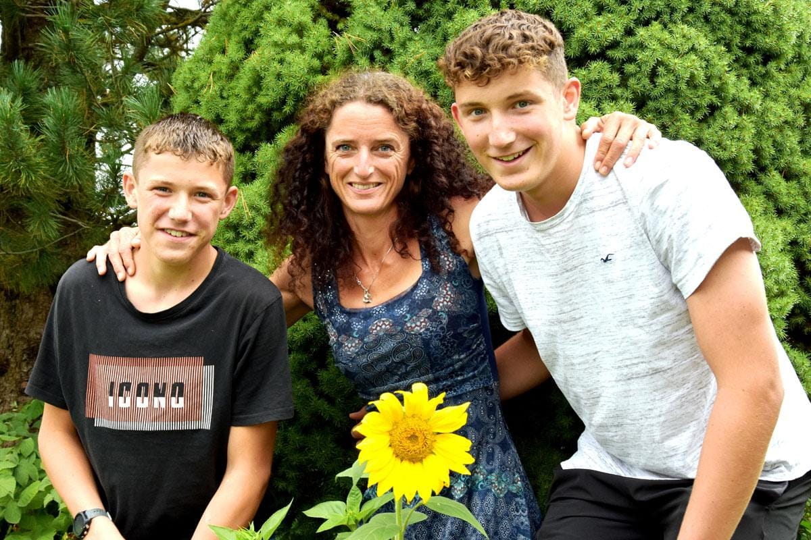

Heilmassage
Auf ärztliche Verordnung – zu Reha- & Heilzwecken.
- Ärztlich verordnet
- Reha & Heilzwecke
- Von der dipl. Heilmasseurin
Entspannender Urlaub in gemütlichen Ferienwohnungen, professionelle Massage und gesundheitsorientiertes Training – ein Ort des Wohlfühlens für Gäste, Kunden und Klienten, mitten im Ausseerland.
Dein Ort zum Wohlfühlen
Urlaub · Massage · Gesundheit
Rödschitz 53
8983 Bad Mitterndorf, Steiermark
Massage-Termine nach Vereinbarung
Ruf einfach an – wir finden deinen Termin.
Die Energie-Quelle steht für Gesundheit und Wohlfühlen in Bad Mitterndorf – entspannender Urlaub, professionelle Massage und gesundheitsorientiertes Training.

„Ich bin sehr naturverbunden und liebe das wunderschöne Bergpanorama rundherum – diesen Traum lebe ich mit der Energie‑Quelle.“
Bianca Dürbeck · Heilmasseurin & Inhaberin
Von der Ferienwohnung über professionelle Massage bis zu Bewegung und Gesundheit – entdecke, was die Energie‑Quelle für dich bereithält.
Gezielt gegen Verspannungen, tief entspannend und ganzheitlich – abgestimmt auf dich.
Auf ärztliche Verordnung – zu Reha- & Heilzwecken.
Wohltat ohne ärztliche Verordnung.
Über die Wirbelsäule auf Organe & Nerven.
Der ganze Mensch – über die Füße erreicht.
Bad Mitterndorf ist das ideale Umfeld für deine Auszeit: kristallklare Seen, das Tote Gebirge und der Grimming vor der Tür – Winter wie Sommer.
Das größte Einzelskigebiet im steirischen Ausseerland – über drei Berge und die verbindende Tauplitzalm, ideal für Familien.
Rund 130 km Loipennetz (klassisch & Skating) zwischen 780 und 1.650 m – in Bad Mitterndorf, auf der Tauplitz und der Tauplitzalm.
Der glasklare Ödensee zwischen Wäldern und dem Toten Gebirge ist ein Kraftplatz zum Spazieren und Durchatmen.
Zahlreiche Wander- und Radwege sowie Ausflugsziele – zu Fuß, mit dem Rad oder dem Auto leicht erreichbar.
Vereinbare jetzt deinen persönlichen Termin in der Energie-Quelle – ich freue mich darauf, dir neue Kraft zu schenken.